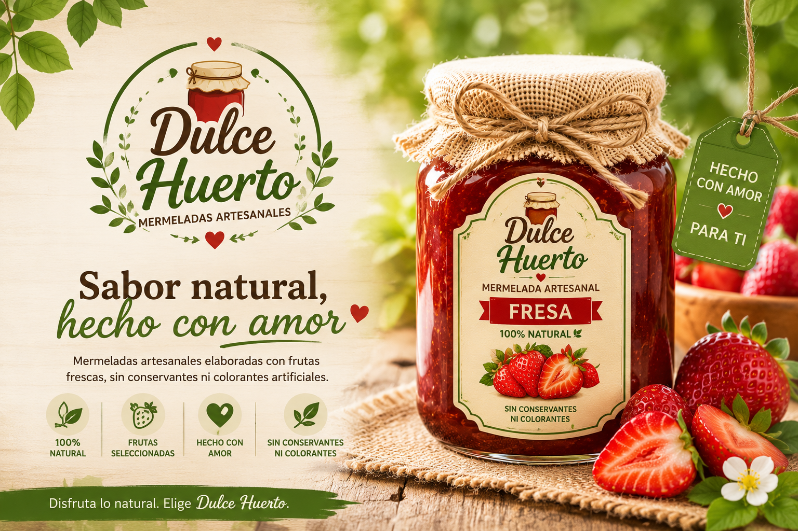
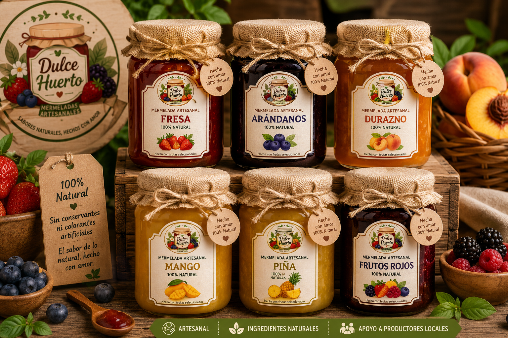
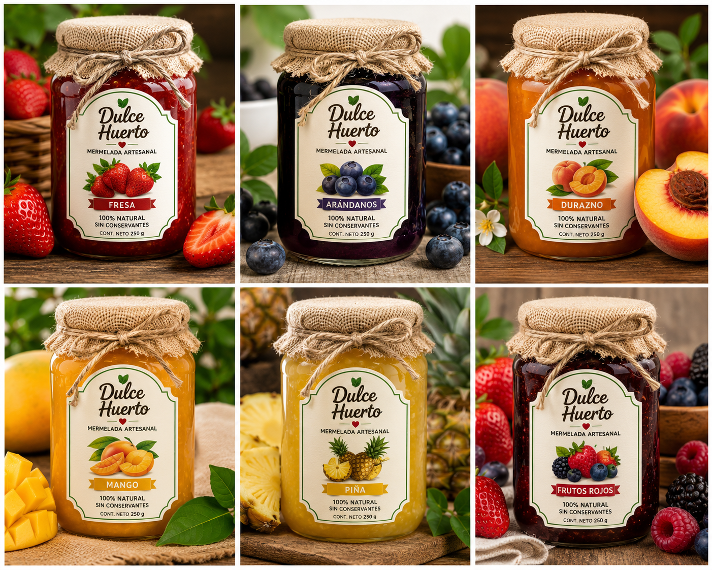

Mermeladas artesanales
Sabor natural,
Sabor natural,
hecho con amor
Frutas seleccionadas, procesos naturales y una experiencia deliciosa para compartir en familia.
✓ 100% natural
✓ Sin colorantes artificiales
✓ Producción artesanal
¿Quiénes somos?
Naturalidad, calidad y tradición en cada frasco
Dulce Huerto es un emprendimiento dedicado a la elaboración y comercialización de mermeladas artesanales, preparadas con frutas seleccionadas y procesos naturales que garantizan calidad, sabor y valor nutricional.
Nuestro propósito es ofrecer productos saludables que respondan a las necesidades de consumidores que buscan alternativas naturales, deliciosas y de alta calidad.

Nuestra historia
De las frutas de la región a una marca con propósito
Dulce Huerto nació como una iniciativa emprendedora orientada a aprovechar las frutas de calidad disponibles en la región y transformarlas en productos con valor agregado.
El proyecto surgió al identificar la creciente demanda de alimentos naturales y saludables frente a los productos industrializados. Hoy buscamos fortalecer nuestra presencia en el mercado mediante la comunicación digital, la mejora continua y una atención cercana al cliente.
Apostamos por la economía local y por una alimentación más saludable.
Nuestra identidad
Lo que guía cada decisión
🌿
Misión
Elaborar mermeladas artesanales de alta calidad utilizando ingredientes naturales, brindando productos saludables y deliciosos que satisfagan las expectativas de nuestros clientes.
☀️
Visión
Ser una marca reconocida en Huancayo y la región central del Perú por la calidad de sus mermeladas artesanales, la innovación, el compromiso con la salud y la excelente atención.
❤️
Propuesta de valor
Mermeladas elaboradas con frutas frescas y seleccionadas, sin conservantes artificiales, que combinan calidad, naturalidad, sabor auténtico y producción artesanal.
Nuestros valores
CalidadResponsabilidadInnovación
HonestidadCompromisoTrabajo en equipoSostenibilidad
Nuestros productos
Un sabor para cada momento
Presentaciones prácticas y atractivas, elaboradas con frutas frescas y procesos naturales.

Fresa
Dulce, aromática y perfecta para desayunos y postres.
Piña
Tropical, fresca y con un equilibrio natural de sabor.
Durazno
Suave, delicada y agradable para toda la familia.
Arándanos
Intensa, frutal y una excelente opción para combinar.
Mango
Cremosa, tropical y naturalmente deliciosa.
Frutos rojos
Una mezcla vibrante de sabores y aromas naturales.
Más que un producto
Una atención cercana y personalizada
Pedidos digitales
Recepción de pedidos por redes sociales y WhatsApp.
Entrega bajo pedido
Coordinación rápida y directa según disponibilidad.
Asesoramiento
Orientación sobre sabores, características y beneficios.
Promociones
Información actualizada mediante nuestros canales digitales.
¿Para quién es Dulce Huerto?
Para personas que eligen lo natural
Nos dirigimos principalmente a hombres y mujeres de Huancayo y zonas cercanas que buscan productos artesanales, saludables y de calidad para complementar su alimentación diaria.
- Familias interesadas en una alimentación más saludable.
- Personas de 18 a 65 años que valoran el sabor y los ingredientes naturales.
- Consumidores que apoyan emprendimientos locales.
- Usuarios que prefieren comprar y consultar por redes sociales o WhatsApp.
Nosotros
El equipo detrás de Dulce Huerto
Un equipo comprometido con la calidad, la innovación y el crecimiento del emprendimiento.
EA
Edith Arcos Huyhua
Integrante del proyecto
GM
Glicerio Marcas Chávez
Integrante del proyecto
JB
Josselyn Bujayco Alvarez
Integrante del proyecto
Contáctanos
Haz tu pedido y disfruta lo natural
Estamos listos para ayudarte a elegir tu mermelada favorita.
* Reemplaza el número y correo por los datos reales del emprendimiento.